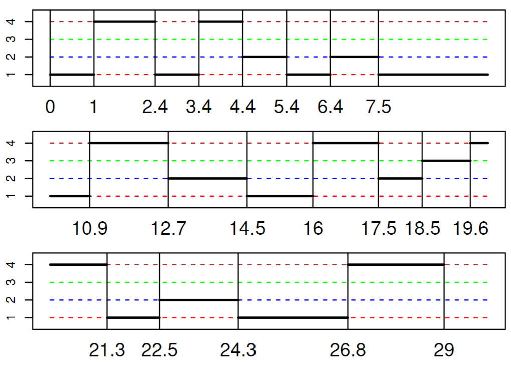

Mahdi Afarideh, Jan Marten Winkler, Fredrik Nyström

a) Find the posterior for \(\tilde P\). Compute the expectation
The transition matrix \(\tilde P\) of the embedded chain is unknown, and we will use data from Figure 1 to learn about it. Let \(\tilde P_{1}, \tilde P_{2}, \tilde P_{4}\), and \(\tilde P_{4}\) be the four rows of \(\tilde P\).
Find the posterior given the data in the figure: Express the posterior using parametric distributions with explicit parameters. Compute the expected value of this posterior distribution.
For this task we just look at the embedded discrete chain. We are given 20 observations \(x_{0}, \dots, x_{20}\) in the state space \(\{ 1,2,3,4 \}\). The following values \(c_{ij}\) give the count of transition between 2 states \(i,j\):
\(c_{ij}\)
1
2
3
4
1
0
2
0
5
2
4
0
1
0
3
0
0
0
1
4
2
3
0
0
Using this the likelyhood can be formulated as: \[
\pi(x_{0}, \dots, x_{20} | \tilde P) = \pi(x_{0}) \prod_{r=1}^{20} \pi(x_{r} | x_{r-1}, \tilde P) = \pi(x_{0}) \prod_{r=1}^{20} \tilde P_{x_{r-1}, x_{r}} = \pi(x_{0}) \prod_{i=k}^4 \prod_{j=1}^4 (P_{ij})^{c_{ij}}
\]
For the rows of \(\tilde P\), we are given the priors: \[
\begin{array}{l l l}{{\displaystyle\tilde{P}_{1}}}&{{\sim}}&{{\mathrm{Dirichlet}(0,1,1,1)}}\\ {{\tilde{P}_{2}}}&{{\sim}}&{{\mathrm{Dirichlet}(1,0,1,1)}}\\ {{\displaystyle\tilde{P}_{3}}}&{{\sim}}&{{\mathrm{Dirichlet}(1,1,0,1)}}\\ {{\displaystyle\tilde{P}_{4}}}&{{\sim}}&{{\mathrm{Dirichlet}(1,1,1,0)}}\end{array}
\] So the Prior for \(\tilde P\) can be formulated as: \[
\pi(\tilde P) = \prod_{i=1}^4 \mathrm{Dirichlet}(\tilde P_{i}; \alpha_{i}) \propto \prod_{i=1}^4 \prod_{j=1}^4 (P_{ij})^{\alpha_{ij} - 1}
\] For the posterior we see:
Thus the posterior is given by the distribution \[
\pi(\tilde P | x_{0}, \dots x_{20}) = \mathrm{Dirichlet}( \tilde P_{1}; 0, 3, 1, 6) \mathrm{Dirichlet}( \tilde P_{2}; 5, 0, 2, 1) \mathrm{Dirichlet}( \tilde P_{3}; 1,1,0,2) \mathrm{Dirichlet}( \tilde P_{4}; 3,4,1,0)
\] The expectation for one entry of a Dirichlet Distribution is given by: \[
E[\tilde P_{ij}] = E[\mathrm{Dirichlet}( \tilde P_{i}; \alpha_{i})_{j}] = \frac{a_{ij}}{\sum_{k=1}^4 \alpha_{ik}}
\]
# alpha parameters for the prior distributionsalpha_prior <-matrix(c(0, 1, 1, 1, # alpha11, 0, 1, 1, # alpha21, 1, 0, 1, # alpha31, 1, 1, 0), # alpha4nrow =4, byrow =TRUE)transition_counts <-matrix(c(0, 2, 0, 5, 4, 0, 1, 0, 0, 0, 0, 1, 2, 3, 0, 0),nrow =4, byrow =TRUE)# Calculate the alpha parameters for the posterioralpha_matrix <- alpha_prior + transition_counts# Function to compute Dirichlet expectation row wise# returns a vectordirichlet_expectation <-function(alpha_row) { total_alpha <-sum(alpha_row)return(alpha_row / total_alpha)}# Calculate the expectations for all rowsexpectations <-t(apply(alpha_matrix, 1, dirichlet_expectation))# Print the expectationsprint(expectations)
b) Obtain a posterior distribution for q. Compute the expected value.
Now assume that the process is a homogeneous Markov chain. Let \(q = (q_{1}, q_{2}, q_{3},q_{4})\) be the vector of parameters for the Exponential distributions of the holding times at the four different states, respectively. Assume independent priors for each qi proportional to \(1/qi\). Now use the data from the figure to obtain a posterior distribution for q. Express the posterior using parametric distributions with explicit parameters. Compute the expected value of the posterior distribution.
The parameters for the exponential distribution of the holding times are given by \(q = (q_{1}, q_{2}, q_{3},q_{4})\). Let the observed holding times for a state be \(x_{1}, \dots x_{n}\), the values are the following:
\(x_1\)
\(x_{2}\)
\(x_{3}\)
\(x_{4}\)
\(x_{5}\)
\(x_{6}\)
\(x_{7}\)
1
1
1
1
3.4
1.5
1.2
2.5
2
1
1.1
1.8
1
1.8
-
-
3
1.1
4
1.4
1
1.8
1.5
1.7
2.2
-
The likelyhood for each state indepentently is thus given by the exponential distribution: \[
\pi(x_{1}, \dots x_{n} | q_{i}) = \prod_{i=1}^n \mathrm{Exponential}(x_{j} ; q_{i}) = q_{i}^n \exp\left( -q_{i} \sum_{j=1}^n x_{j} \right)
\] The priors are given by independent \(\pi(q_{i}) = \frac{1}{q_{i}}\). For the posteriors we thus get indepentently: \[
\pi(q_{i} | x_{1}, \dots x_{n}) \propto \pi(x_{1}, \dots x_{n} | q_{i}) \pi(q_{i}) = q_{i}^{n-1} \exp\left( -q_{i} \sum_{j=1}^n x_{j} \right) \propto \mathrm{Gamma}(q_{i}, n, \sum_{j=1}^n x_{j} )
\]\[
\begin{align}
q_1 &\sim \text{Gamma}(7, 11.6) \\
q_2 &\sim \text{Gamma}(5, 6.7) \\
q_3 &\sim \text{Gamma}(1, 1.1) \\
q_4 &\sim \text{Gamma}(6, 9.6) \\
\end{align}
\] The expectation of a Gamma Distribution is: \(E[X] = \frac{\alpha}{\beta}\), so we get the expected rates:
Write R code which takes as input the transition matrix \(\tilde P\) of a continuous-time discrete state-space Markov chain and a vector \(q\) of parameters for the distributions of the holding times of the chain, and outputs the long-term probability that the process will be in state 3. Apply the code to the expected values found in questions (a) and (b) and report the result.
As we visit all states, we can assume the markov chain is irreducable. We want to find the limiting distribution \(\pi\). For irreducable chains the unique limiting distribution is given by the stationary distribution, which we can find by solving \(\pi Q = 0\):
stationary_distribution <-function(P, q) { Q0 <- P*matrix(q, 4, 4) Q <- Q0 -diag(q)# find pQ=0 Q2 <- Q Q2[,1] <-1# Right-hand side: zeros for pQ=0, and 1 for sum=1 result <-c(1, 0, 0, 0)%*%solve(Q2) return(result)}dist <-stationary_distribution(expectations, q)cat("The long term probability for state 3 is given by:", dist[3])
The long term probability for state 3 is given by: 0.09970986
d)
Use simulation in R and your results from questions (a), (b), and (c) to answer the following question: Taking into account the parameter uncertainty, what is the long-term probability that the process in the Figure is in state 3?
install.packages("LearnBayes")
Warning message:
"package 'LearnBayes' is in use and will not be installed"
library(LearnBayes)# store the average distributiondists <-c(0,0,0,0)n <-1000# sample a matrix P given some alpha values from dirichletsample_P<-function(alpha_matrix){ P <-apply(alpha_matrix, 1, function(alpha_row){rdirichlet(1, alpha_row) })return(P)}# sample the q vector from the gamma distributionsample_q <-function(number_visited,holding_times){ q1 <-rgamma(1,number_visited[1], holding_times[1]) q2 <-rgamma(1,number_visited[2], holding_times[2]) q3 <-rgamma(1,number_visited[3], holding_times[3]) q4 <-rgamma(1,number_visited[4], holding_times[4]) q <-c(q1, q2, q3, q4)return(q)}for (i in1:n){# sample P and q P <-sample_P(alpha_matrix) q <-sample_q(number_visited,holding_times) sim <-stationary_distribution(P, q) dists <- dists + sim}# calculate the meandist <- dists/ncat("The long term probability for state 3 is given by:", dist[3])
The long term probability for state 3 is given by: 0.2959284
e)
Implement simulation of a realization of the process over 30 steps. (You may if you like re-use and adapt code from Lecture 12). You should implement two versions of simulation - Draw values for \(\tilde P\) and \(q\) from their posteriors, and use these values when simulating all the steps of the process. - Simulate only one transition or one duration at the time, and update posteriors with simulated values before going to the next step.
# sample posteriors of P and q once using the initition dataP <-sample_P(alpha_matrix)q <-sample_q(number_visited,holding_times) N <-30states <-rep(0, N)states[1] <-4for (i in2:N) # sample a next state i according to probabilities P states[i] <-sample(1:4, 1, prob = P[states[i-1],])# sample the holding time from q:waits <-rexp(N, q[states])times <-cumsum(waits)options(repr.plot.width=12, repr.plot.height=6)# To plot the simulation as a step function: par(bg ="white") x <- y <-rep(0, 2* N)y[2* (1:N) -1] <- statesy[2* (1:N)] <- statesx[2* (1:N)] <- timesx[2* (2:N) -1] <- times[-N]plot(x, y, type ="l", xlab ="Time", ylab ="State", yaxt ="n")axis(2, at =1:4)
N <-30states <-rep(0, N)states[1] <-4for(i in2:N) {# sample P using the updated alpha P <-sample_P(alpha_matrix)# sample a next state i according to probabilities P states[i] <-sample(1:4, 1, prob = P[states[i-1],])# Update the count for the transition alpha_matrix[states[i]-1, states[i]] <- alpha_matrix[2, states[i]] +1# sample the posterior of q using updated parameters q <-sample_q(number_visited,holding_times)# increase the count for the state number_visited[states[i]] <- number_visited[states[i]]+1# sample the holding time from q: wait <-rexp(1, q[states[i]])# store the new total holding time: holding_times[states[i]] <- holding_times[states[i]]+wait waits[i]<-wait}# To plot the simulation as a step function: times <-cumsum(waits)par(bg ="white") # Adjust the width and heightx <- y <-rep(0, 2* N)y[2* (1:N) -1] <- statesy[2* (1:N)] <- statesx[2* (1:N)] <- timesx[2* (2:N) -1] <- times[-N]plot(x, y, type ="l", xlab ="Time", ylab ="State", yaxt ="n")axis(2, at =1:4)print(alpha_matrix)print(holding_times)
Find the formula for the probability that \(k\) independent random variables with \(\mathrm{Exponential}(λ)\) distributions are all at least \(1\). Then, compute analytically the expectation of this formula when \(\lambda\) has a \(\mathrm{Gamma}(α, β)\) distribution.
Probability that \(k\) independent \(\text{Exponential}(\lambda)\) random variables are all at least 1
\[ E[e^{-k\lambda}] = \int_{0}^{\infty} e^{-k\lambda} f_\lambda(\lambda) \, d\lambda = \frac{\beta^\alpha}{\Gamma(\alpha)} \int_{0}^{\infty} \lambda^{\alpha - 1} e^{-(k+\beta) \lambda} \, d\lambda\] Since the term inside of the integral is proportional to the Gamma density this integrates to the normalizing constant: \[\int_{0}^{\infty} \lambda^{\alpha - 1} e^{-(k+\beta) \lambda} \, d\lambda=
\frac{\Gamma(\alpha)}{(k+\beta)^\alpha} \int_{0}^{\infty}\frac{(k+\beta)^\alpha}{\Gamma(\alpha)} \lambda^{\alpha - 1} e^{-(k+\beta) \lambda} \, d\lambda = \frac{\Gamma(\alpha)}{(k+\beta)^\alpha} \cdot 1
\]
Note that in the Figure, all visits to state 1 are at least 1 long. Use your result in (f) to compute the probability, under our assumptions so far, that this happens. If this were a real, applied setting, what kind of conclusions might be drawn from this computation?
# Visiting state 1 seven times in the figure including the uncertainty of the ratek <-7alpha <-7beta <-11.6n_samples =100000lambdas <-rgamma(n_samples, alpha, beta)probs <-exp(-k*lambdas)mean(probs)
0.0366685222272593
Since the probability is around 3.7% its quite unlikely that we will stay in state 1 for equal or longer than 1 second, which is suprising because if we naivly look at the average staying time in state 1, it is bigger than one second.